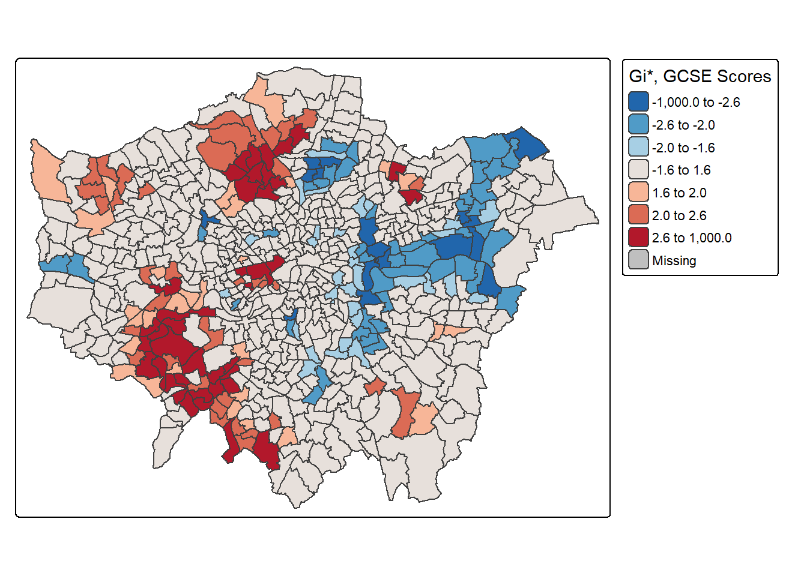
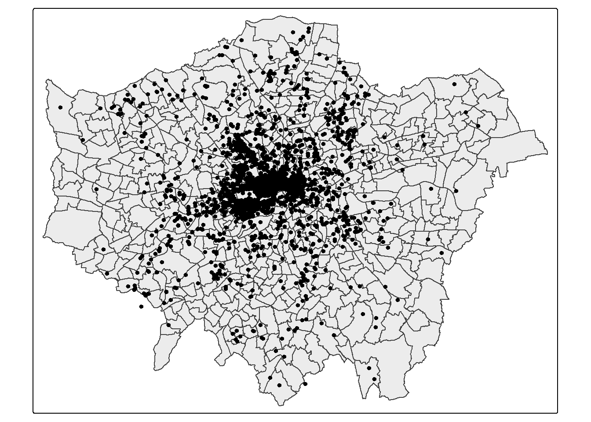
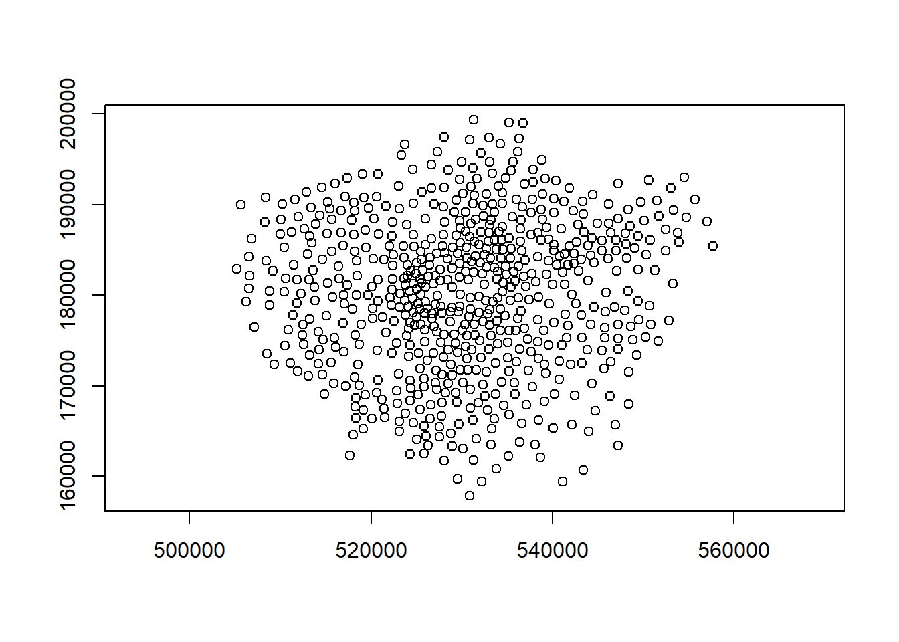
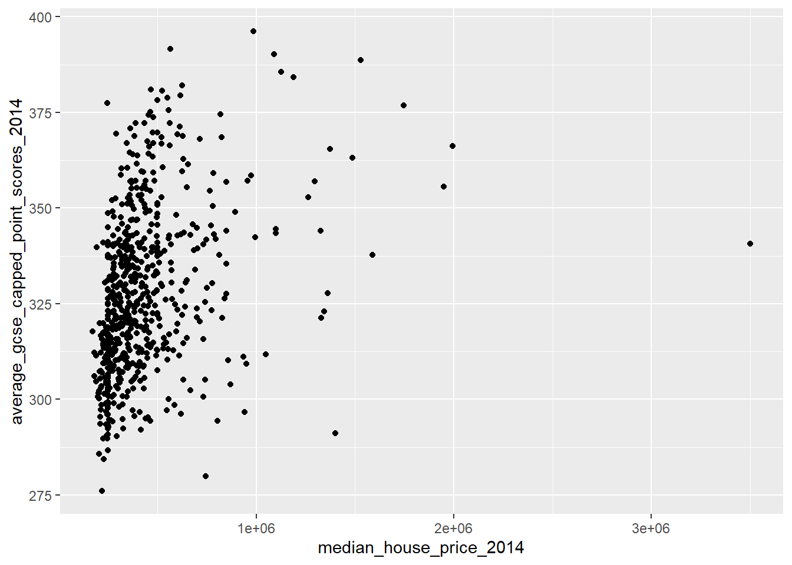

Chapter 7 Spatial autocorrelation
7.1 Learning outcomes
By the end of this practical you should be able to:
- Execute data cleaning and manipulation appropriate for analysis
- Explain and implement different models for spatial relationships (e.g. spatial weights)
- Investigate the degree to which values at spatial points are similar (or different) to each other
- Interpret the meaning of spatial autocorrleation in spatial data
7.2 Homework
Outside of our scheduled sessions you should be doing around 12 hours of extra study per week. Feel free to follow your own GIS interests, but good places to start include the following:
Exam
Each week we will provide a short task to test your knowledge, these should be used to guide your study for the final exam.
For the task this week complete the practice exam question you started last week with the new tools you have learnt.
Reading
This week:
What Problem? Spatial Autocorrelation and Geographic Information Science by Goodchild (2009).
Chapter 13 “Spatial Autocorrelation†from Intro to GIS and Spatial Analysis by Gimond (2019).
Spatial Point Pattern Analysis and Its Application in Geographical Epidemiology by Gatrell et al. (1996)
Remember this is just a starting point, explore the reading list, practical and lecture for more ideas.
7.3 Recommended listening 🎧
Some of these practicals are long, take regular breaks and have a listen to some of our fav tunes each week.
Adam This week it’s the head honcho himself, the man, the legend that is Tony Colman, CEO and founder of Hospital Records — his new album Building Better Worlds is a masterpiece! Enjoy!
7.4 Introduction
7.4.1 Analysing Spatial Autocorrelation with Moran’s I, LISA and friends
In this section we are going to explore patterns of spatially referenced continuous observations using various measures of spatial autocorrelation. Spatial autocorrelation is a measure of similarity between nearby data. Check out the various references in the reading list for more information about the methods we will explore today. There are also useful links in the help file of the spdep package which we will be using here.
This week my question might be Are the values (in this case the density of blue plaques) similar (or dissimilar) across the wards of London
7.4.2 Data download
Before we get any further, let’s get some ward boundaries read in to R — download LondonWardData from the London Data store and read it in…
Use the data in the statistical-gis-boundaries-london.zip
library(here)
library(janitor)
library(sf)
library(tidyverse)
#read the ward data in
LondonWards <- st_read(here::here("prac6_data", "LondonWards.shp"))## Reading layer `LondonWards' from data source
## `C:\Users\Andy\OneDrive - University College London\Teaching\CASA0005\2022_2023\CASA0005repo\prac6_data\LondonWards.shp'
## using driver `ESRI Shapefile'
## Simple feature collection with 625 features and 77 fields
## Geometry type: POLYGON
## Dimension: XY
## Bounding box: xmin: 503568.2 ymin: 155850.8 xmax: 561957.5 ymax: 200933.9
## Projected CRS: OSGB 1936 / British National GridLondonWardsMerged <- st_read(here::here("prac6_data",
"statistical-gis-boundaries-london",
"statistical-gis-boundaries-london",
"ESRI",
"London_Ward_CityMerged.shp"))%>%
st_transform(.,27700)## Reading layer `London_Ward_CityMerged' from data source
## `C:\Users\Andy\OneDrive - University College London\Teaching\CASA0005\2022_2023\CASA0005repo\prac6_data\statistical-gis-boundaries-london\statistical-gis-boundaries-london\ESRI\London_Ward_CityMerged.shp'
## using driver `ESRI Shapefile'
## Simple feature collection with 625 features and 7 fields
## Geometry type: POLYGON
## Dimension: XY
## Bounding box: xmin: 503568.2 ymin: 155850.8 xmax: 561957.5 ymax: 200933.9
## Projected CRS: OSGB 1936 / British National GridWardData <- read_csv("https://data.london.gov.uk/download/ward-profiles-and-atlas/772d2d64-e8c6-46cb-86f9-e52b4c7851bc/ward-profiles-excel-version.csv",
locale = locale(encoding = "latin1"),
na = c("NA", "n/a")) %>%
clean_names()
LondonWardsMerged <- LondonWardsMerged %>%
left_join(WardData,
by = c("GSS_CODE" = "new_code"))%>%
dplyr::distinct(GSS_CODE, .keep_all = T)%>%
dplyr::select(GSS_CODE, ward_name, average_gcse_capped_point_scores_2014)It’s probably projected correctly, but in case it isn’t give it a projection using the st_crs() function in the sf package
#have a look to check that it's
#in the right projection
st_crs(LondonWardsMerged)## Coordinate Reference System:
## User input: EPSG:27700
## wkt:
## PROJCRS["OSGB 1936 / British National Grid",
## BASEGEOGCRS["OSGB 1936",
## DATUM["OSGB 1936",
## ELLIPSOID["Airy 1830",6377563.396,299.3249646,
## LENGTHUNIT["metre",1]]],
## PRIMEM["Greenwich",0,
## ANGLEUNIT["degree",0.0174532925199433]],
## ID["EPSG",4277]],
## CONVERSION["British National Grid",
## METHOD["Transverse Mercator",
## ID["EPSG",9807]],
## PARAMETER["Latitude of natural origin",49,
## ANGLEUNIT["degree",0.0174532925199433],
## ID["EPSG",8801]],
## PARAMETER["Longitude of natural origin",-2,
## ANGLEUNIT["degree",0.0174532925199433],
## ID["EPSG",8802]],
## PARAMETER["Scale factor at natural origin",0.9996012717,
## SCALEUNIT["unity",1],
## ID["EPSG",8805]],
## PARAMETER["False easting",400000,
## LENGTHUNIT["metre",1],
## ID["EPSG",8806]],
## PARAMETER["False northing",-100000,
## LENGTHUNIT["metre",1],
## ID["EPSG",8807]]],
## CS[Cartesian,2],
## AXIS["(E)",east,
## ORDER[1],
## LENGTHUNIT["metre",1]],
## AXIS["(N)",north,
## ORDER[2],
## LENGTHUNIT["metre",1]],
## USAGE[
## SCOPE["Engineering survey, topographic mapping."],
## AREA["United Kingdom (UK) - offshore to boundary of UKCS within 49°45'N to 61°N and 9°W to 2°E; onshore Great Britain (England, Wales and Scotland). Isle of Man onshore."],
## BBOX[49.75,-9,61.01,2.01]],
## ID["EPSG",27700]]Always plot the data to check it looks reasonable (e.g. there are no points in other countries / the latitude and longitude are correct)
library(tmap)
BluePlaques <- st_read(here::here("prac6_data",
"open-plaques-london-2018-04-08.geojson")) %>%
st_transform(.,27700)## Reading layer `open-plaques-london-2018-04-08' from data source
## `C:\Users\Andy\OneDrive - University College London\Teaching\CASA0005\2022_2023\CASA0005repo\prac6_data\open-plaques-london-2018-04-08.geojson'
## using driver `GeoJSON'
## Simple feature collection with 2812 features and 2 fields
## Geometry type: POINT
## Dimension: XY
## Bounding box: xmin: -0.477 ymin: 0 xmax: 0.21903 ymax: 51.6783
## Geodetic CRS: WGS 84tmap_mode("plot")
tm_shape(LondonWardsMerged) +
tm_polygons(col = NA, alpha = 0.5) +
tm_shape(BluePlaques) +
tm_dots(col = "blue")
7.5 Data cleaning
Ah yes, we might need to lose the blue plaques that fall outside of London
summary(BluePlaques)## id inscription geometry
## Min. : 1.0 Length:2812 POINT :2812
## 1st Qu.: 711.8 Class :character epsg:27700 : 0
## Median : 6089.0 Mode :character +proj=tmer...: 0
## Mean :10622.0
## 3rd Qu.:10358.2
## Max. :49190.0BluePlaquesSub <- BluePlaques[LondonWardsMerged,]
tm_shape(LondonWardsMerged) +
tm_polygons(col = NA, alpha = 0.5) +
tm_shape(BluePlaquesSub) +
tm_dots(col = "blue")
7.6 Data manipulation
The measures of spatial autocorrelation that we will be using require continuous observations (counts of blue plaques, average GCSE scores, average incomes etc.) to be spatially referenced (i.e. attached to a spatial unit like a ward or a borough). The file you have already has the various obervations associated with the London Ward data file already attached to it, but let’s continue with our blue plaques example for now.
To create a continuous observation from the blue plaques data we need to count all of the blue plaques that fall within each Ward in the City. Luckily, we can do this using the st_intersects() function from the sf package.
st_intersects() will return a list of which points (plaques) are in each polygon (wards). So each row will be a polygon and the ID are the point IDs that intersect the polygon.
In this case we don’t want to use st_join() (which by default uses st_intersects()) as st_join() is like a left join and will retain all the data in on the left. So if a ward is empty, there will still be a row for that ward. So, we use st_intersects() on its own. We could also use other topological relationship functions such as st_within() instead…
example<-st_intersects(LondonWardsMerged, BluePlaquesSub)
exampleHere the polygon with the ID of 6 Kingston upon Thames - Coombe Hill has three plaques within it…we can check this with st_join (or using QGIS by opening the data)…we have three plaques…But note the ID column added is different to the ID of the data…open blueplaques from the environment window and you will see the IDs that were returned in st_intersects().
check_example <- LondonWardsMerged%>%
st_join(BluePlaquesSub)%>%
filter(ward_name=="Kingston upon Thames - Coombe Hill")Now we just take the length of each list per polygon and add this as new column…
library(sf)
points_sf_joined <- LondonWardsMerged%>%
mutate(n = lengths(st_intersects(., BluePlaquesSub)))%>%
janitor::clean_names()%>%
#calculate area
mutate(area=st_area(.))%>%
#then density of the points per ward
mutate(density=n/area)%>%
#select density and some other variables
dplyr::select(density, ward_name, gss_code, n, average_gcse_capped_point_scores_2014)How about a quick choropleth map to see how we are getting on…
points_sf_joined<- points_sf_joined %>%
group_by(gss_code) %>%
summarise(density = first(density),
wardname= first(ward_name),
plaquecount= first(n))
tm_shape(points_sf_joined) +
tm_polygons("density",
style="jenks",
palette="PuOr",
midpoint=NA,
popup.vars=c("wardname", "density"),
title="Blue Plaque Density")
So, from the map, it looks as though we might have some clustering of blue plaques in the centre of London so let’s check this with Moran’s I and some other statistics.
7.7 Weight matrix
Before being able to calculate Moran’s I and any similar statistics, we need to first define a \(W_{ij}\) spatial weights matrix
library(spdep)First calculate the centroids of all Wards in London
#First calculate the centroids of all Wards in London
coordsW <- points_sf_joined%>%
st_centroid()%>%
st_geometry()
plot(coordsW,axes=TRUE)Now we need to generate a spatial weights matrix (remember from the lecture). We’ll start with a simple binary matrix of queen’s case neighbours (otherwise known as Contiguity edges corners). This method means that polygons with a shared edge or a corner will be included in computations for the target polygon…A spatial weight matrix represents the spatial element of our data, this means we are trying to conceptualize and model how parts of the data are linked (or not linked) to each other spatially, using rules that we will set.
A note on spatial weight matrices
If the features share a boundary they are contiguous, this can also be classed as only common boundaries — a rook (like chess a rook can move forwards or side wards) or any point in common (e.g. corners / other boundaries) — a queen (like chess a queen can move forwards, backwards or on a diagonal).
](prac6_images/weights.png)
Figure 7.1: Source: Manuel S. Gonzalez Canche
Alternatively instead of using contiguous relationships you can use distance based relationships. This is frequently done with k nearest neighbours in which k is set to the closest observations. e.g. K=3 means the three closest observations.
In the first instance we must create a neighbours list — which is a list of all the neighbours. To do so we will use poly2nb() with the argument queen=T saying we want a to use Queens case. Let’s see a summary of the output
#create a neighbours list
LWard_nb <- points_sf_joined %>%
poly2nb(., queen=T)The output is a neighbour list object hence why i’ve called the object LWard_nb. We can get some summary info and plot the matrix.
summary(LWard_nb)## Neighbour list object:
## Number of regions: 625
## Number of nonzero links: 3680
## Percentage nonzero weights: 0.94208
## Average number of links: 5.888
## Link number distribution:
##
## 1 2 3 4 5 6 7 8 9 10 11 12
## 1 4 15 72 162 182 112 55 14 4 2 2
## 1 least connected region:
## 380 with 1 link
## 2 most connected regions:
## 313 612 with 12 linksHere it is telling us that the average number of neighbours is 5.88. Now let’s plot the neighbours.
#plot them
plot(LWard_nb, st_geometry(coordsW), col="red")
#add a map underneath
plot(points_sf_joined$geometry, add=T)7.7.1 Matrix style
From the weights list we must now make a spatial weight matrix. This makes a matrix the size of the number of neighbourhoods with values indicating if the elements in the rows are a neighbour or not. The style of weight is especially important here:
- B is the basic binary coding (1/0)
- W is row standardised (sums over all links to n)
- C is globally standardised (sums over all links to n)
- U is equal to C divided by the number of neighbours (sums over all links to unity)
- S is the variance-stabilizing coding scheme proposed by Tiefelsdorf et al. 1999, p. 167-168 (sums over all links to n).
To understand this further let’s start with binary.
#create a spatial weights matrix from these weights
Lward.lw <- LWard_nb %>%
nb2mat(., style="B")
sum(Lward.lw)## [1] 3680Summing the binary (1/0) shows that we have 3680 neighbours. Now if we were to do global standardisation this would mean dividing our 625 wards by the total number of neighbours meaning each spatial weight has a value of 0.169.
Alternatively we can do row standardisation where 1 is divided by the sum of the number of neighbours in each row. For example, row 1 here sums to 6, meaning each weight would be 0.166 in row 1 only.
sum(Lward.lw[1,])## [1] 6Standardisation permits comparable spatial parameters. But you also need to consider geographical features — should a neighbour be a neighbour if there is a river between them?
7.8 Autocorrelation
Now we have defined our \(W_{ij}\) matrix, we can calculate the Moran’s I and other associated statistics. However, Moran’s I requires a spatial weight list type object as opposed to matrix, this is simply…
Lward.lw <- LWard_nb %>%
nb2listw(., style="C")7.8.1 Moran’s I
Moran’s I test tells us whether we have clustered values (close to 1) or dispersed values (close to -1), we will calculate for the densities rather than raw values (think about why this is?).
I_LWard_Global_Density <- points_sf_joined %>%
pull(density) %>%
as.vector()%>%
moran.test(., Lward.lw)
I_LWard_Global_Density##
## Moran I test under randomisation
##
## data: .
## weights: Lward.lw
##
## Moran I statistic standard deviate = 29.88, p-value < 2.2e-16
## alternative hypothesis: greater
## sample estimates:
## Moran I statistic Expectation Variance
## 0.6651530207 -0.0016025641 0.00049792827.8.2 Geary’s C
Geary’s C as well..? This tells us whether similar values or dissimilar values are clustering
C_LWard_Global_Density <-
points_sf_joined %>%
pull(density) %>%
as.vector()%>%
geary.test(., Lward.lw)
C_LWard_Global_Density##
## Geary C test under randomisation
##
## data: .
## weights: Lward.lw
##
## Geary C statistic standard deviate = 8.1813, p-value < 2.2e-16
## alternative hypothesis: Expectation greater than statistic
## sample estimates:
## Geary C statistic Expectation Variance
## 0.412516628 1.000000000 0.0051564057.8.3 Getis Ord
Getis Ord General G…? This tells us whether high or low values are clustering. If G > Expected = High values clustering; if G < expected = low values clustering
G_LWard_Global_Density <-
points_sf_joined %>%
pull(density) %>%
as.vector()%>%
globalG.test(., Lward.lw)
G_LWard_Global_Density##
## Getis-Ord global G statistic
##
## data: .
## weights: Lward.lw
##
## standard deviate = 29.225, p-value < 2.2e-16
## alternative hypothesis: greater
## sample estimates:
## Global G statistic Expectation Variance
## 1.126545e-02 1.602564e-03 1.093203e-07So the global statistics are indicating that we have spatial autocorrelation of Blue Plaques in London:
7.8.4 Summary
The Moran’s I statistic = 0.67 (remember 1 = clustered, 0 = no pattern, -1 = dispersed) which shows that we have some distinctive clustering
The Geary’s C statistic = 0.41 (remember Geary’s C falls between 0 and 2; 1 means no spatial autocorrelation, <1 - positive spatial autocorrelation or similar values clustering, >1 - negative spatial autocorreation or dissimilar values clustering) which shows that similar values are clustering
The General G statistic = G > expected, so high values are tending to cluster.
7.8.5 Local Moran’s I
We can now also calculate local versions of the Moran’s I statistic (for each Ward) and a Getis Ord \(G_{i}^{*}\) statistic to see where we have hot-spots…
Local Moran’s I is:
- The difference between a value and neighbours * the sum of differences between neighbours and the mean
- Where the the difference between a value and neighbours is divided by the standard deviation (how much values in neighbourhood vary about the mean)
It returns several columns, of most interest is the Z score. A Z-score is how many standard deviations a value is away (above or below) from the mean. This allows us to state if our value is significantly different than expected value at this location considering the neighours.
We are comparing our value of Moran’s I to that of an expected value (computed from a separate equation that uses the spatial weight matrix, and therefore considers the neighbouring values). We are expecting our value of Moran’s I to be in the middle of the distribution of the expected values. These expected values follow a normal distribution, with the middle part representing complete spatial randomness. This is typically between < -1.65 or > +1.65 standard deviations from the mean
The null hypothesis is always there is complete spatial randomness. A null hypothesis means:
no statistical significance exists in a set of given observations
If our value is towards the tails of the distribution then it is unlikely that the value is completely spatially random and we can reject the null hypothesis…as it is not what we expect at this location.
In the example where we use a z-score of >2.58 or <-2.58 we interpret this as…
…> 2.58 or <-2.58 standard deviations away from the mean are significant at the 99% level…this means there is a <1% chance that autocorrelation is not present
The Global vs location spatial autocorrelation resource goes through the specific formulas here, but the most important parts are knowing
- What we are comparing values to in Local Moran’s I
- What the results mean
- Why the results could be important
#use the localmoran function to generate I for each ward in the city
I_LWard_Local_count <- points_sf_joined %>%
pull(plaquecount) %>%
as.vector()%>%
localmoran(., Lward.lw)%>%
as_tibble()
I_LWard_Local_Density <- points_sf_joined %>%
pull(density) %>%
as.vector()%>%
localmoran(., Lward.lw)%>%
as_tibble()
#what does the output (the localMoran object) look like?
slice_head(I_LWard_Local_Density, n=5)## # A tibble: 5 × 5
## Ii E.Ii Var.Ii Z.Ii `Pr(z != E(Ii))`
## <localmrn> <localmrn> <localmrn> <localmrn> <localmrn>
## 1 0.0888413 -0.0001086963 0.01144408 0.8314871 0.4056985
## 2 0.1310300 -0.0002175669 0.02286771 0.8679202 0.3854380
## 3 0.1070829 -0.0001864859 0.01963267 0.7655724 0.4439308
## 4 0.1163672 -0.0001864859 0.01963267 0.8318337 0.4055028
## 5 0.1163672 -0.0001864859 0.01963267 0.8318337 0.4055028There are 5 columns of data. We want to copy some of the columns (the I score (column 1) and the z-score standard deviation (column 4)) back into the LondonWards spatialPolygonsDataframe
points_sf_joined <- points_sf_joined %>%
mutate(plaque_count_I = as.numeric(I_LWard_Local_count$Ii))%>%
mutate(plaque_count_Iz =as.numeric(I_LWard_Local_count$Z.Ii))%>%
mutate(density_I =as.numeric(I_LWard_Local_Density$Ii))%>%
mutate(density_Iz =as.numeric(I_LWard_Local_Density$Z.Ii))7.8.5.1 Mapping
No we can plot a map of the local Moran’s I outputs…
We’ll set the breaks manually based on the rule that data points >2.58 or <-2.58 standard deviations away from the mean are significant at the 99% level (<1% chance that autocorrelation not present); >1.96 - <2.58 or <-1.96 to >-2.58 standard deviations are significant at the 95% level (<5% change that autocorrelation not present). >1.65 = 90% etc.
breaks1<-c(-1000,-2.58,-1.96,-1.65,1.65,1.96,2.58,1000)Now create a new diverging colour brewer palette and reverse the order using rev() (reverse) so higher values correspond to red
library(RColorBrewer)
MoranColours<- rev(brewer.pal(8, "RdGy"))Plot on an interactive map
tm_shape(points_sf_joined) +
tm_polygons("plaque_count_Iz",
style="fixed",
breaks=breaks1,
palette=MoranColours,
midpoint=NA,
title="Local Moran's I, Blue Plaques in London")This map shows some areas in the centre of London that have relatively high scores, indicating areas with lots of blue plaques neighbouring other areas with lots of blue plaques.
7.8.6 Local Getis Ord \(G_{i}^{*}\)
What about the Getis Ord \(G_{i}^{*}\) statistic for hot and cold spots…
This is a very similar concept to Local Moran’s I except it just returns a z-score…remember that a z-score shows how many standard deviations a value (our value) is away (above or below) from the mean (of the expected values)
Ultimately a z-score is defined as:
\[Z = \frac{x-\mu}{\sigma}\] Where:
- \(x\) = the observed value
- \(\mu\) = the mean of the sample
- \(\sigma\) = standard deviation of sample
Note, consult the Global vs location spatial autocorrelation resource for how this is computed in Local Moran’s I if you are interested, although interpretation is the most important part here.
However, in the case of Getis Ord \(G_{i}^{*}\) this is the local sum (of the neighbourhood) compared to the sum of all features
In Moran’s I this is just the value of the spatial unit (e.g. polygon of the ward) compared to the neighbouring units.
Here, to be significant (or a hot spot) we will have a high value surrounded by high values. The local sum of these values will be different to the expected sum (think of this as all the values in the area) then where this difference is large we can consider it to be not by chance…
The same z-score criteria then applies as before..
This summary from L3 Harris nicely summaries the Getis Ord \(G_{i}^{*}\) output…
The result of Getis Ord \(G_{i}^{*}\) analysis is an array of Z-scores, one for each pixel [or polygon], which is the number of standard deviations that the pixel [or polygon] and its neighbors are from the global mean. High Z-scores indicate more intense clustering of high pixel values, indicating hot spots. Low Z-scores indicate more intense clustering of low values, indicating cold spots. Individual pixels with high or low values by themselves might be interesting but not necessarily significant.
Gi_LWard_Local_Density <- points_sf_joined %>%
pull(density) %>%
as.vector()%>%
localG(., Lward.lw)
head(Gi_LWard_Local_Density)## [1] -0.8314871 -0.8679202 -0.7655724 -0.8318337 -0.8318337 -0.7937671Check the help file (?localG) to see what a localG object looks like
Note that because of the differences in Moran’s I and Getis Ord \(G_{i}^{*}\) there will be differences between polyogons that are classed as significant.
Add the Getis Ord \(G_{i}^{*}\) data to the simple feature…
points_sf_joined <- points_sf_joined %>%
mutate(density_G = as.numeric(Gi_LWard_Local_Density))And map the outputs…
library(RColorBrewer)
GIColours<- rev(brewer.pal(8, "RdBu"))
#now plot on an interactive map
tm_shape(points_sf_joined) +
tm_polygons("density_G",
style="fixed",
breaks=breaks1,
palette=GIColours,
midpoint=NA,
title="Gi*, Blue Plaques in London")
7.9 Other variables
The local Moran’s I and \(G_{i}^{*}\) statistics for wards clearly show that the density of blue plaques in the centre of the city exhibits strong (and positive) spatial autocorrelation, but neither of these maps are very interesting. Why not try some alternative variables and see what patterns emerge… here I’m going to have a look at Average GSCE scores…
#use head to see what other variables are in the data file
slice_head(points_sf_joined, n=2)## Simple feature collection with 2 features and 9 fields
## Geometry type: POLYGON
## Dimension: XY
## Bounding box: xmin: 543417.3 ymin: 183674.3 xmax: 549991.5 ymax: 185809.7
## Projected CRS: OSGB 1936 / British National Grid
## # A tibble: 2 × 10
## gss_code density wardn…¹ plaqu…² geometry plaqu…³ plaqu…⁴
## <chr> [1/m^2] <chr> <int> <POLYGON [m]> <dbl> <dbl>
## 1 E05000026 7.79e-7 Barkin… 1 ((543595.5 184832.8, 543… 0.0563 0.656
## 2 E05000027 0 Barkin… 0 ((547932.4 184916.6, 547… 0.0819 0.687
## # … with 3 more variables: density_I <dbl>, density_Iz <dbl>, density_G <dbl>,
## # and abbreviated variable names ¹​wardname, ²​plaquecount, ³​plaque_count_I,
## # ⁴​plaque_count_Iz
## # ℹ Use `colnames()` to see all variable namesOr print out the class of each column like we did in week 2, although we need to drop the geometry.
Datatypelist <- LondonWardsMerged %>%
st_drop_geometry()%>%
summarise_all(class) %>%
pivot_longer(everything(),
names_to="All_variables",
values_to="Variable_class")
Datatypelist## # A tibble: 3 × 2
## All_variables Variable_class
## <chr> <chr>
## 1 GSS_CODE character
## 2 ward_name character
## 3 average_gcse_capped_point_scores_2014 numericI_LWard_Local_GCSE <- LondonWardsMerged %>%
arrange(GSS_CODE)%>%
pull(average_gcse_capped_point_scores_2014) %>%
as.vector()%>%
localmoran(., Lward.lw)%>%
as_tibble()
points_sf_joined <- points_sf_joined %>%
arrange(gss_code)%>%
mutate(GCSE_LocIz = as.numeric(I_LWard_Local_GCSE$Z.Ii))
tm_shape(points_sf_joined) +
tm_polygons("GCSE_LocIz",
style="fixed",
breaks=breaks1,
palette=MoranColours,
midpoint=NA,
title="Local Moran's I, GCSE Scores")Now the Gi* statistic to look at clusters of high and low scores and explain what the output map is showing and what other questions this can lead us to ask next week…..
G_LWard_Local_GCSE <- LondonWardsMerged %>%
dplyr::arrange(GSS_CODE)%>%
dplyr::pull(average_gcse_capped_point_scores_2014) %>%
as.vector()%>%
localG(., Lward.lw)
points_sf_joined <- points_sf_joined %>%
dplyr::arrange(gss_code)%>%
dplyr::mutate(GCSE_LocGiz = as.numeric(G_LWard_Local_GCSE))
tm_shape(points_sf_joined) +
tm_polygons("GCSE_LocGiz",
style="fixed",
breaks=breaks1,
palette=GIColours,
midpoint=NA,
title="Gi*, GCSE Scores")
So this is the end of the practical. Hopefully you have learned a lot about the different methods we can employ to analyse patterns in spatial data.
7.10 Feedback
Was anything that we explained unclear this week or was something really clear…let us know using the feedback form. It’s anonymous and we’ll use the responses to clear any issues up in the future / adapt the material.